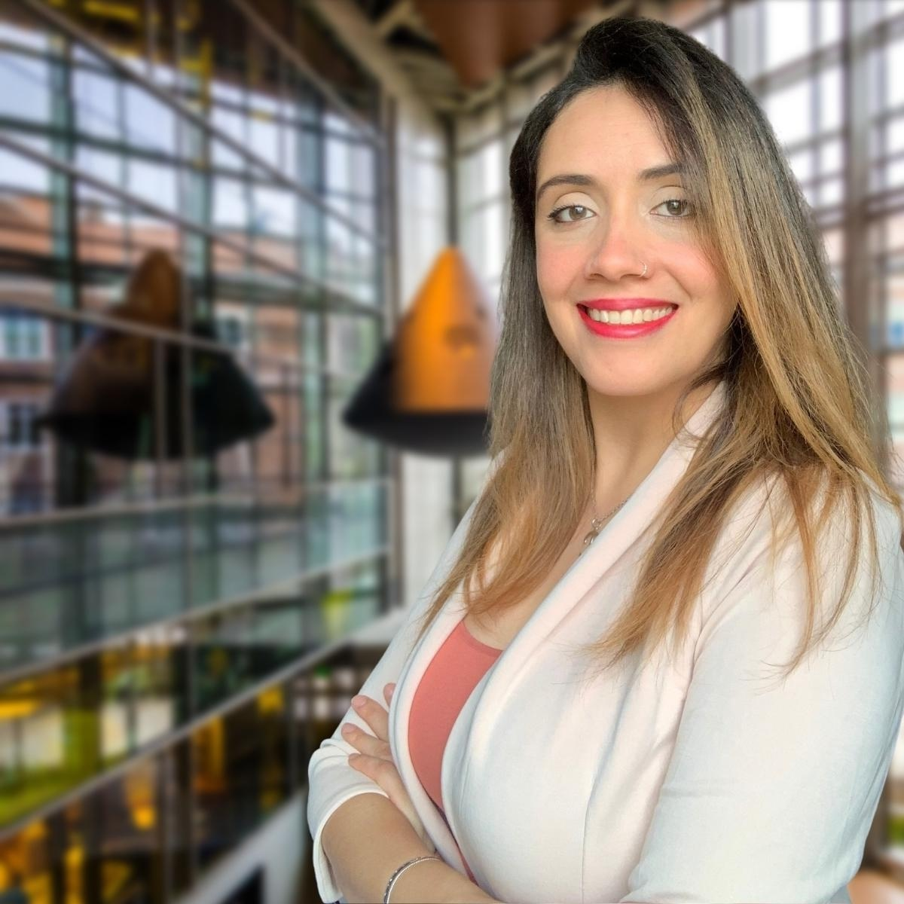

About

Bárbara Fagundes is a learning scientist and LX specialist with a background that spans early childhood education, computer science, and engineering education research. Originally from São Paulo, Brazil, she began her career as a K-5 teacher before making an unlikely leap into a Master's in Computer Science at Jackson State University, an HBCU in Mississippi where she taught herself core CS subjects, navigated graduate school in a second language, and deepened her commitment to equity and inclusion in education. The first in her family to earn a college degree and a Ph.D., Bárbara's path into academia was neither linear nor guaranteed, and that experience shapes both the questions she asks as a researcher and the educator she has become.
That path led her to Purdue University, where she earned a Ph.D. in Engineering Education and built a research program focused on a question she has carried since the classroom: how do we design learning environments that actually work, not just for students who already fit the mold, but for everyone? Her work spans early computational thinking in K-2 settings, undergraduate STEM engagement and persistence, and the responsible integration of generative AI in computing and engineering courses.
Bárbara brings an unusual combination to this work. She has the practitioner instincts of a former teacher, the analytical rigor of a researcher, and the technical foundation of a computer scientist. She is most energized when research connects directly to practice, when findings shape how courses are designed, how instructors teach, and how learners grow.
Scope of work
Bárbara's work sits at the intersection of learning science, computing education, and emerging technology. She studies how young children develop computational thinking in K-2 settings, how students engage with engineering design across K-12, and how undergraduates experience autonomy and motivation in STEM courses through the lens of Self-Determination Theory. Her current work also examines how undergraduate students adopt and ethically use generative AI in computer science and engineering courses, with attention to learning processes, responsible use, and instructional implications. Across these areas, Bárbara translates research findings into practical instructional guidance, curriculum design, and learning experiences that are measurable, scalable, and built to work for every learner.
Education
- Ph.D. in Engineering Education.
- M.S. in Computer Science.
- B.A. in Early Childhood Education.
Research and projects
- Generative AI in undergraduate computing and engineering courses. Qualitative research on students’ responsible use of AI tools, learning processes, ethical considerations, tool limitations, and instructional implications.
- Student Pedagogy Advocates. Student-faculty partnership work supporting evidence-based teaching, undergraduate mentoring, and research-to-practice initiatives.
- Rethinking Circle Time. NSF-funded research integrating computational thinking into K-2 literacy through programming lessons, classroom video analysis, teacher-facing materials, and survey design.
- Pre-college engineering education research. Classroom-based video data collection, curriculum implementation support, and analysis of engineering design learning in K-12 settings.
Teaching and instructional design
- Teaching Engineering Online. Co-developed graduate course modules, scripts, and instructional slides for online and blended engineering education.
- CISTAR NSF Engineering Research Center. Designed e-learning modules, video-based instructional supports, teacher-facing lessons, and middle school engineering curriculum materials.
- First-Year Engineering Courses. Supported required Purdue engineering courses serving approximately 240 students per semester; mentored student teams, supported Excel and MATLAB work, and gave feedback on technical communication.
- Early childhood and elementary teaching. Designed and delivered interdisciplinary lessons in literacy, mathematics, science, geography, and history in public and private schools in São Paulo, Brazil.